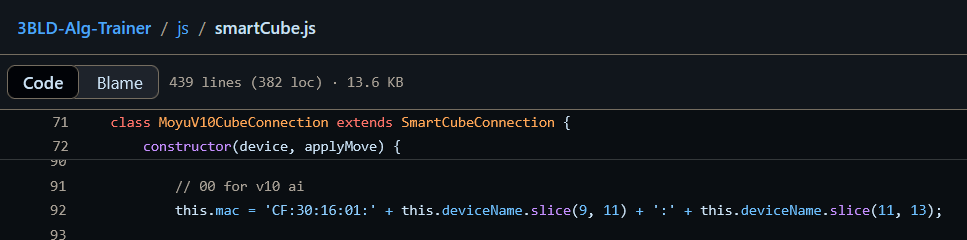

This trainer is currently offline while I rework access and distribution.
In the meantime, you can use Nam's trainer . For MoYu V10AI you need to edit the MAC address in the SmartCube.js file in line 92 (see attached image).
Thanks for understanding.